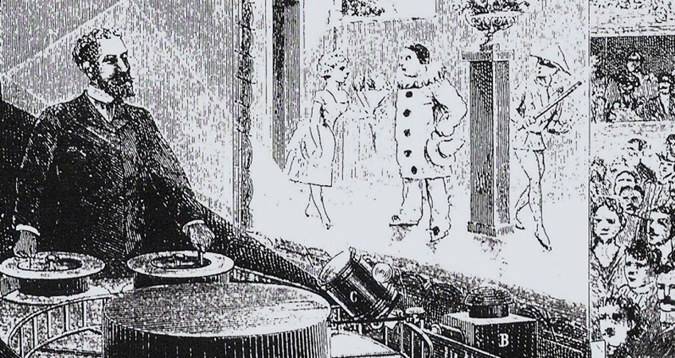

Еще один аспект мирового кинематографа, который к 1930 годам развился в достаточно сильную и масштабную отрасль – это мультипликация.
Вернемся немного назад во времени. Если мы рассмотрим период 1880-ых годов, то мы увидим, что анимация намного старше кино. Рисование опережало фотографию, и соответственно рассматриваемые здесь аппараты (волшебный фонарь, камера обскура и др.) были изобретениями в сфере мультипликации, пока не появились фотоаппараты.
Международный день анимации, отмечаемый ежегодно 28 октября, прославляет первый показ «Оптического театра» Эмиля Рейно.
Эмиль Рейно в 1892 году с использованием аппарата «Праксиноскоп» представил массовой театральной аудитории рисованный фильм. Его показы были сенсацией. Изображение было высочайшего качества, так как пленка двигалась в аппарате плавно, без рывков, музыкальное сопровождение соответствовало изображению, а само изображение по качеству было выше всех похвал.

Но в 1895 году мир узнаем кинематограф. Изображаемая, рисованная реальность резко теряет свою популярность, будучи оттесненной феноменом запечатлеваемой кино действительности. Кино быстро превратилось в сильного, непобедимого соперника для мультипликации. Однако, огромный успех кино и его массовое распространение позволили мультипликаторам использовать технические и экономические достижения кино в свою пользу. Мультипликаторы присоединились к сфере кино, отвоевав себе небольшое, но стабильное место в кинопрокате.
Как и первые фильмы, первые мультики были очень коротенькими и бессюжетными. Первые годы развития кинематографа – это история экспериментов и открытия различных эффектов. История развития мультипликации также представляет собой историю развития различных технических приемов – кукольная анимация, графическая анимация, перекладная анимация и другие. Первые мультфильмы по аналогии с первыми фильмами создавались с целью поразить зрителя необычностью изображаемого на экране действа. Так, например, мультфильм Джеймса Стюарта Блэктона «Очарованный рисунок» (The Enchanted Drawing), сделанный в 1900 г. – это скорее театрализованное представление трюка, где художник рисует на холсте изображение, которое оживает и взаимодействует с художником.
Уже к 1910-ым годам мультипликация развивается в самостоятельную целостную отрасль производства, преодолевая этап кустарного единичного производства. Художники привлекают помощников для прорисовки сотен изображений, которые требуется нарисовать даже для простенькой короткометражной анимации. Появляются первые студии анимации, занимающиеся исключительно созданием мультипликационных фильмов.
Анимация к этому времени уже приобрела оригинальное творческое воплощение – сформировались различные стили мультипликации, персонажи стали одухотвореннее и сложнее, сюжеты стали сложнее и уникальнее. Мультипликаторы поняли, что сила анимации в том, что сначала казалось ее минусом – в ее нереалистичности, в возможности изображать фантазии, далекие от обыденности. В 1908 году французский мультипликатор Эмиль Коль (Émile Cohl) выпускает анимационный фильм «Фантасмагория или кошмар Фантоша», который станет первым мультфильмов со структурированным самодостаточным сюжетом и характерным главным героем.
Однако прорыв в производстве мультипликации, также как и в кинематографе, произошел не во Франции, а в США. Американский мультипликатор Уинзор Маккей (Winsor McCay) возносит технику и стилистику анимации на новый уровень. В 1911 году он выпускает первый цветной мультик «Маленький Немо» (Little Nemo), а в 1914 году «Динозавр Герти» (Gertie the Dinosaur), с первым характерным персонажем, обладающим яркими личностными качествами и вызывавшей сопереживание публики.
В 1914 году Джон Брэй (John Randolph Bray) открывает в США первую анимационную студию «Bray Productions», работающую на принципах индустриального производства. Студия выпускала большое количество мультфильмов и имела соглашения по широкому их прокату в кинотеатрах. В 1917 году в свет выходит первый полнометражный мультфильм «Апостол» аргентинского автора Квирини Кристиани (Quirino Cristiani). Данный мультфильм имел длительность 70 минут, его копии не сохранились.
Мультипликаторы продолжали создавать новые техники рисования, параллельно развивались как техническая, так и творческая стороны анимации. К концу 1920- началу 1930-х годов мультфильмы приобрели собственный вес на арене кинопроизводства. Огромную роль в развитии и становлении индустрии производства анимированных фильмов сыграл Уолт Дисней.
В 1923 году Уолт Дисней приезжает в Голливуд и открывает там студию «Disney Brothers Studio», которая сегодня известна как «The Walt Disney Company». Сочетая в своей работе творческую инновативность и беспрестанное техническое совершенствование, Дисней выработал собственный диснеевский стиль мультипликации и вывел анимационные фильмы в разряд лидеров кинорынка. Выпущенный в 1937 году мультфильм «Белоснежка и семь гномов» стал олицетворением технического и творческого совершенства, на которое оказались способны рисованные фильмы. Эта анимация стала самым успешным в коммерческом плане фильмом 1938 года.
Успех мультфильма «Белоснежки и семь гномов» ознаменовал период, который именуют «Золотой век анимации». Студия Уолта Диснея продолжила выпускать мультфильмы имевшие оглушительный успех ("Пиноккио", 1940 г., "Бэмби", 1942 г., "Золушка", 1950 г. и множество других). Последовав успешному примеру студии Диснея, другие крупные компании также открыли собственные анимационные подразделения. Так, в 1940 году студия МGM начинает выпускать легендарных «Том и Джерри», а компания Warner Brothers занялась продвижением мультсериала «Looney Tunes» с его знаменитыми персонажами Багзом Банни, Даффи Даком и другими.
Таким образом, в 1930-е годы мультфильмы становятся значимой частью мирового кинобизнеса. В период 1930-1940-х годов по всему миру начали формироваться анимационные студии, различные организации мультипликаторов и художников. Мультфильмы окончательно перестали восприниматься как детский аттракцион, в них вкладывали огромные деньги, с их помощью реализовывались сложные творческие идеи. Более того, кинематограф обогатился, синтезировав в себе возможности мультипликации - в одном кадре объединились анимация и живые актеры (как, например, в фильмах "Песня юга", 1946 г., "Мерри Поппинс", 1964 г., "Кто подставил кролика Роджера", 1988 г.). Это комбинирование реального и рисованного расширило границы возможностей для кинематографа и стало основой компьютерной революции в кино. На сегодняшний день кинематограф и мультипликация слились в единое целое, стерев четкие границы между реальным изображением и смоделированными на компьютере анимированными изображениями.